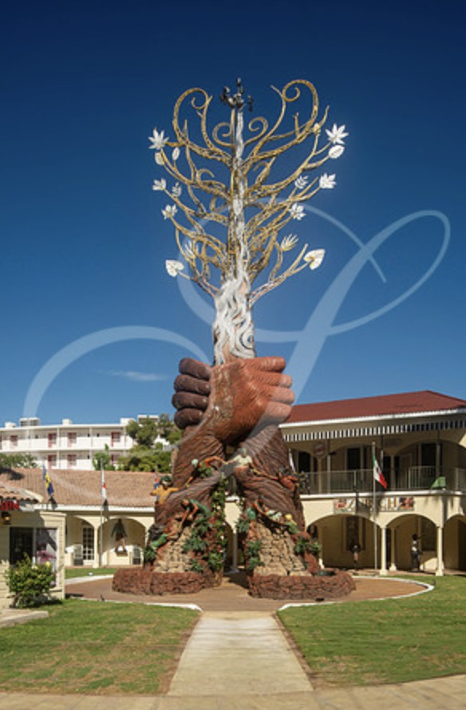

Together We Rise
62-foot monumental sculpture
A monumental sculpture created around the idea of Jamaica rising and rebuilding after Hurricane Melissa. The work incorporates a Tree of Life, representations of Jamaica’s 14 parishes through leaves, and scenes reflecting resilience, recovery and community.